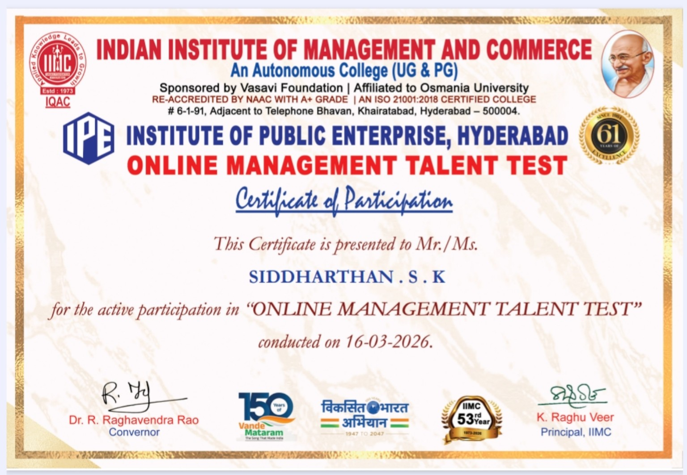
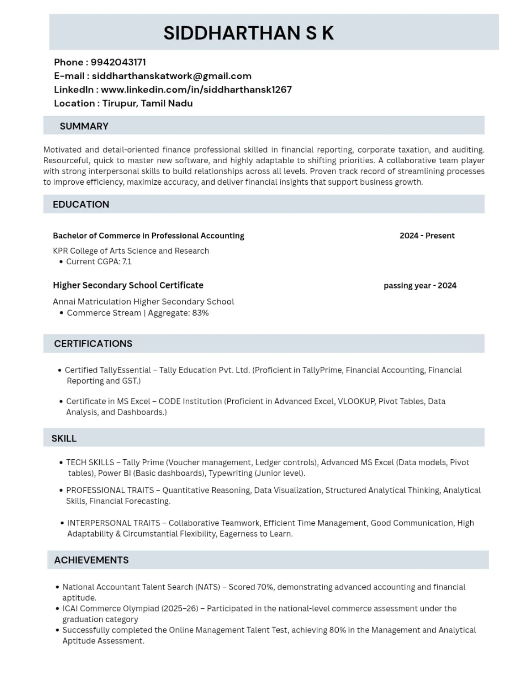

2024 — PRESENT
Bachelor of Commerce in Professional Accounting
KPR College of Arts Science and Research
Current CGPA: 7.1B.COM PROFESSIONAL ACCOUNTING • 2024 — PRESENT
Motivated and detail-oriented finance student focused on accounting, financial reporting, taxation, data analysis and practical business technology.
Finance • Accounting • Data
PROFILE
I am a B.Com Professional Accounting student at KPR College of Arts Science and Research. I enjoy turning accounting concepts and business data into clear, useful information.
My learning path combines TallyPrime, advanced Excel, basic Power BI, financial reporting, analytical thinking and communication. I am adaptable, eager to learn and interested in opportunities where finance and technology meet.
EDUCATION
KPR College of Arts Science and Research
Current CGPA: 7.1Annai Matriculation Higher Secondary School
Commerce Stream • Aggregate: 83%SKILL MATRIX
Voucher management, ledger controls, accounting & reporting.
Accounting workflowData models, Pivot Tables, VLOOKUP, analysis & dashboards.
Data analysisBasic dashboards, data visualization and business insights.
VisualizationJunior-level typing skill with focus on accuracy and speed.
Junior levelQuantitative reasoning, forecasting and structured analytical thinking.
AnalyticalTeamwork, time management, communication, flexibility and learning.
InterpersonalACHIEVEMENTS
Scored 70%, demonstrating accounting and financial aptitude.
Participated in the national-level commerce assessment under the graduation category.
Achieved 80% in the Management and Analytical Aptitude Assessment.
FEATURED CERTIFICATE
Certificate of Participation for active participation in the online management talent test conducted on 16-03-2026.
Open Certificate ↗
CERTIFICATIONS
TALLY EDUCATION
Recording & Reporting • Fundamentals of Accounting • TallyPrime • Banking • Financial Statements & MIS Reports
Grade B • 03-Oct-2024KPR COLLEGE
Certificate of participation in the National Financial Literacy Quiz 2026 (Online Round).
UG CategoryRESUME SNAPSHOT
Use the button to open the resume image and the certificate cards above to view the original uploaded certificate files.
Open Resume ↗
LET'S CONNECT
If you would like to discuss an internship, entry-level opportunity or collaboration, feel free to reach out.